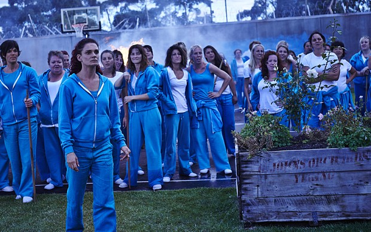

Wentworth Prison: Everyone Has A Weak Spot
Published: 16th October, 2015
The hit Australian drama Wentworth Prison returned to Channel 5 on July 22nd, opening with a montage of how Bea Smith went from being an abused wife to Top Dog. Season 3 followed on from last season seeing Bea Smith back behind bars after brutally murdering Braydon Holt. Now she is determine to bring down the sadistic prison governor, The Freak.

Season 3 mainly focused on Queen Bea not only retaining her position as Top Dog but putting the motions in place to take The Freak down! Although The Freak may think she has the upper hand being the Governor and all, Bea wasn’t alone in her mission. In fact, she had the help of two unlikely sources, Franky and Fletch. Personally, I have been really satisfied with the progression of Bea Smith’s character because even though she has been through so much she has the strength wake up every day and take on whatever prison life holds.
Although the main focus of the season was about the feud between The Freak and Queen Bea it was an emotional time for Franky as she finally found ‘the one’ with none other than psychiatrist Bridget Westfall. It was whom who finally got the truth out of Franky about killing Meg Jackson. Remember her? Franky’s time in Wentworth the went from bad to worse when Will found out she killed his wife and when Kim planted drugs in her cell on the day of her probation hearing but there was a light at the end of the tunnel as Franky was released from Wentworth in episode 12. And to top it all off her dream came true when Bridget (as Franky liked to call her) was waiting in a flash car to drive her into the sunset. It was the ending I and many other hoped for!
Liz found herself back at Wentworth getting drunker than ever no thanks to Jess Warner. The biggest shock for Liz came when her daughter arrived at Wentworth Prison for Drink Driving, a common theme of criminality in this family! Their relationship was extremely shaky at the start but as time passed Sophie finally started to forgive her Mother.
On the subject of relationships Joan’s and Vera’s hit rock bottom in this season and that mighty slap from Joan in episode 11 must have hurt! With no alliance from Vera, The Freak finally lost control. She started seeing everyone she has ever killed and then added another to the list but when she tried to cover her tracks it landed everyone in danger.
Even though The Freak is a psychopath she did save baby Joshua from the very creepy Jess Warner who at the hand of The Freak is no longer alive but it was Bea and Franky who saved the day and got Joshua out of the fire. I am now more than ever intrigued into what is going to happen to The Freak and I am personally glad that the Freak did kill Jess as she was starting to really get on my nerves.
Oh, and how could I not mention Boomer who is still cute as ever, especially when she struggled to do anything with those burnt hands!
Just like season 1 and 2 every character has their own journey and story that makes the show more intriguing. Once again my hat goes off to the cast and crew for making another awesome season!
Overall season 3 was as thrilling and gritty as ever with the season starting with a fire and ending with an explosion! With the arrival of Kaz Proctor and this trailer (see below) season 4 looks like its going to be the best yet!
What are your thoughts on this season of Wentworth Prison? Let me know in the comments below.
Have a spare 5 minutes? Why not test your Wentworth knowledge with this quiz by The Metro.
Wentworth Prison (Season 3) Quiz
Own Wentworth Prison on DVD!